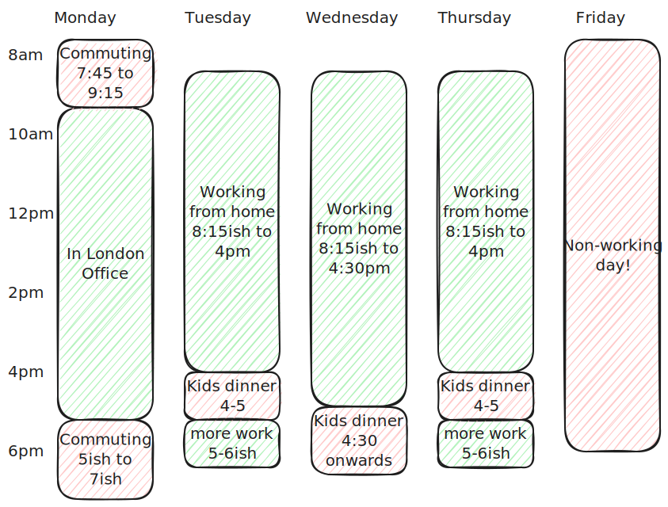

Working days
I work a 4 day week (80% contract) and I don't work Fridays - that's my parenting day!
However I'm usually checking Slack intermittently, no guarantees as kids come first, but ping me there and I will get back to you when I can.
I work from home (sunny Leighton Buzzard) but I attempt to be in the London office one day a week - usually Mondays unless there's some strong reason to change.
My kids like routine, so I avoid changing things around too much!
Daily hours
I don't like too much presenteeism around work hours - we should work when we are most productive, and not force ourselves to particular hours when we are not.
So this is my overall plan, but the daily specifics may vary. I will keep the team up to date on Slack where I have variations.
Mondays I commute to London - it takes around 80-90 minutes, with intermittent connectivity on the train. I usually commute around 7:45 to 9:10 in the morning, and try to leave the office by 5pm.
Tuesdays to Thursdays I start around 8:15am (depending on how we go getting the kids out the door!) and work until around 4pm
I then help with kid dinner and general end-of-day chaos around 4-5pm
Then after dinner I log back in for another 30 to 60 minutes more work, depending on demand and energy levels.